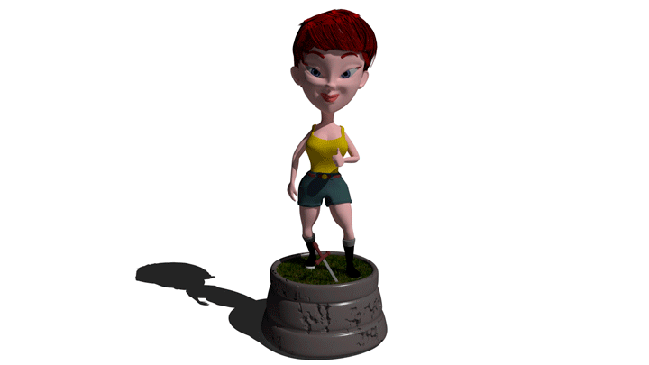

Model Sheet de Lara
¡Hola! Quería contarte sobre el model sheet que hice inspirado en Lara Croft. Decidí hacer algo divertido y peculiar, así que le di a la cabeza un tamaño más grande, lo cual resultó en un toque cómico para mi proyecto en 3D. Creé dibujos de Lara de perfil y de frente a mano, luego los repasé en Photoshop para darles más definición y finalmente los pinté. Estos bocetos me sirvieron como guía para el siguiente paso: el modelado en 3D. Fue un proceso emocionante y creativo que me permitió dar vida a mi visión de Lara Croft.

El modelo 3D de Lara
Asi quedo el modelo 3d, al cliquear la imagen reiniciara la animación.
